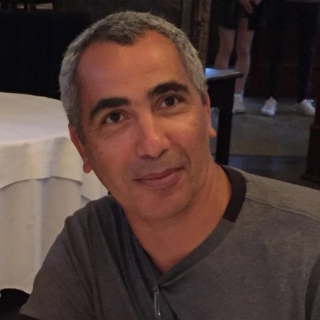

Entrepreneur · Nouvelles technologies · Responsable de projets de transformation IA
Vingt ans dans des environnements difficiles — assurance, banque, secteur public, grandes transformations technologiques. Pas de la théorie. Une expérience directe de ce qui fonctionne, de ce qui échoue, et pourquoi.
Entrepreneur dans les nouvelles technologies — Un Cran d'Avance est construit en parallèle d'un parcours professionnel en entreprise, pour valider par la pratique avant de basculer complètement.
Un VP pour qui j'ai travaillé m'a dit ça un jour, en plein chaos. Projet complexe, acquisition en cours, personne ne savait vraiment où on allait.
Ce qu'il voulait dire : quand tout est confus, commence par trouver ta propre lumière. Les autres viendront quand la pièce commencera à s'éclairer.
Je n'ai jamais trouvé meilleure description de ce qui se passe avec l'IA en ce moment.
Une grande organisation du secteur financier. 300 licences Copilot pour 6 000 personnes. Presque carte blanche pour expérimenter. En pilotant ce projet, j'ai appris que l'IA ne se manage pas comme un projet standard — et que créer l'envie avant de demander la permission change tout.
Une réunion de direction. Projet qui avait déjà échoué trois fois. Tout le monde évitait d'être responsable de quoi que ce soit. Notre directeur a demandé en séance la synthèse à Copilot. Je pilotais ce projet — et j'ai vu la salle changer. En 30 secondes, la machine avait mieux compris que nous. Pas de jeu politique. Pas de poste à protéger. Tout le monde était à nu.
Un grand ministère, full Microsoft — Teams, Dynamics, tout. Quelqu'un propose Copilot pour accélérer les comptes rendus. J'étais responsable de projet côté client — j'ai vu la réaction. Réponse : hors de question, on ne sait pas où sont les données. Sauf que les données étaient déjà chez Microsoft. Depuis le début. Pendant ce temps, les équipes faisaient leurs comptes rendus dans ChatGPT — sans aucune des protections du tenant Microsoft. Il n'avait pas interdit l'IA. Il avait interdit la bonne IA.
Quand je suis parti, aucune initiative IA n'avait démarré. Les meilleurs partaient — certains vers des organisations qui avaient pris le virage, la majorité vers la retraite. Des gens avec 25 ans d'expérience terrain qui préféraient partir plutôt que d'attendre une reconversion qu'ils n'avaient pas choisie.
Les organisations substituent le contrôle à la clarté. C'est une réponse rationnelle à un problème mal posé — et c'est ce qui crée les angles morts.
Le coût de l'inaction sur l'IA, ce n'est pas un projet raté. C'est une organisation qui se vide de son expérience — sans s'en rendre compte.
Les grandes organisations ont perfectionné l'art de mesurer le travail sans questionner le travail lui-même. La vraie question n'est pas "comment mieux rendre compte ?" — c'est "pourquoi avons-nous encore besoin de compter ça ?"
C'est ici que l'IA change l'équation — on peut automatiser ce qui existe et libérer l'énergie sur ce qui compte vraiment. Ou repenser complètement la façon de travailler. Les deux sont possibles. Peu d'organisations savent encore lequel choisir en premier.
Une organisation cherchait un conseiller en stratégie IA. En lisant l'offre attentivement : Azure, Databricks, machine learning, NLP — niveau avancé requis.
Ce n'était pas tout à fait mon profil. Et avec le recul, c'était honnête de leur part.
Mais ça m'a posé une vraie question : où est la valeur d'un praticien de vingt ans qui comprend comment les organisations fonctionnent, échouent et se transforment — et qui maîtrise les enjeux décisionnels de l'IA sans être data scientist ?
Ce profil n'a pas encore de poste. Pas parce que les organisations ne veulent pas le recruter. Parce qu'elles n'arrivent pas encore à formaliser le besoin qui leur permettrait de trouver la bonne personne.
Elles savent qu'elles ont besoin d'IA. Elles ne savent pas encore quel humain il faut pour piloter ça.
Ce vide — c'est exactement ce qu'Un Cran d'Avance adresse. Pas pour remplacer ce rôle. Pour aider ceux qui le cherchent encore à voir plus clair.
Pas de théorie. Pas d'enthousiasme non fondé. Pas de contenu recyclé.
Chaque mardi, 5 signaux filtrés selon leur impact décisionnel réel — traduits en questions concrètes pour votre organisation.
Parce que la bonne question sur l'IA n'est pas "que se passe-t-il ?"
C'est "qu'est-ce que ça change pour moi — et qu'est-ce que je dois décider ?"
Les mêmes situations que vous venez de lire — traduites en décisions concrètes, chaque mardi.
Gratuit · Chaque mardi · Désabonnement en un clic
Les dossiers Premium donnent les cadres pour agir sur les signaux que vous recevez chaque mardi.
Devenir membre Premium — 199€/an →Vos newsletters et dossiers vous attendent.
Accéder à mes éditions →